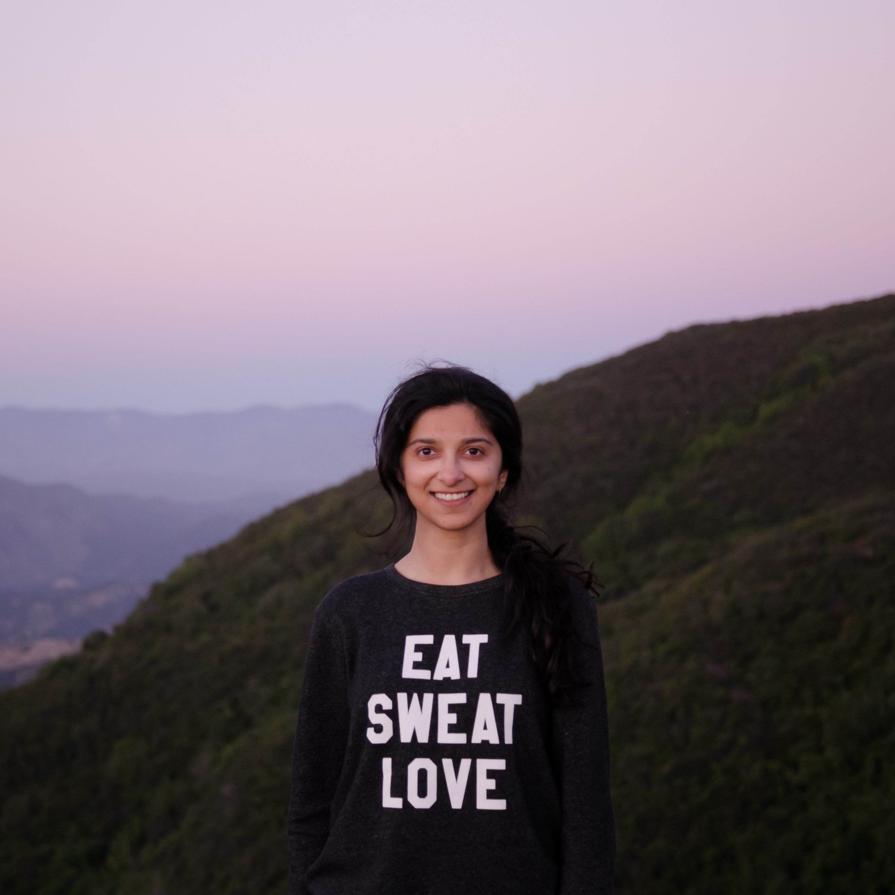

|  |
Ekta Prashnani Ph.D. Candidate (Computer Vision) University of California Santa Barbara, CA ekta at ece dot ucsb dot edu [GitHub] [Google Scholar] [CV] |
My current research focuses on enforcing perceptual consistency in algorithms that evaluate error/quality of images and applications of such a metric.
A recent publication at CVPR2018 provides more details. I am also interested in related problems such as attention modeling, gaze prediction, and also, in 3D computer vision.
My time in grad school is split between my own research and providing technical mentorship
(which I thoroughly enjoy!) to seniors for their capstone projects on computer vision and machine learning. I also enjoy running long distances,
painting and taking pictures.
Updates
| May 3, 2018: Outstanding TA award by the ECE department at UCSB. |
| Apr 23, 2018: Google travel grant for CVPR2018. |
| Feb 19, 2018: Our paper "PieAPP: Perceptual Image-Error Assessment through Pairwise Preference" accepted to CVPR 2018.. Code, trained models, and paper coming online soon! |
| Oct 1, 2017: AI Grant fellowship for developing a perceptually-consistent image error metric. |
Publications
| E. Prashnani*, H. Cai*, Y. Mostofi and P. Sen, "PieAPP: Perceptual Image-Error Assessment through Pairwise Preference," Computer Vision and Pattern Recognition, 2018. [paper] [project webpage] [source code] [.exe] |
| E. Prashnani, M. Moorkami, D. Vaquero and P. Sen, "A Phase-Based Approach for Animating Images Using Video Examples," Computer Graphics Forum, August 2016, Volume 36,
Issue 6. [paper] [video results] |
| *joint first authors |
Teaching

|
EE Capstone TA for academic year 2016-2017 Provided technical mentorship to seniors on their EE Capstone projects. I was closely involved with the team shown here for their project on deep-learning-based image super-resolution. The team (left to right: Julian Castro, Connor Northend, Jose Jimenez) ended up winning the award for Best Technical Capstone Project award (one award for entire College of Engineering capstone projects)! |

|
EE Capstone TA for academic year 2017-2018 Provided technical mentorship to seniors on their EE Capstone projects. I was closely involved with projects related to signal-processing, computer vision and deep learning. One of the teams worked on medical image recognition for arthroscopic images (shown here). My responsibilities included teaching the relevant concepts in deep learning and computer vision, coming up with a viable project definition and research advise for accomplishing this task. |
You can also find me on various online platforms: [LinkedIn] [Github] [Google Scholar] [Flickr] Twitter] [Behance]